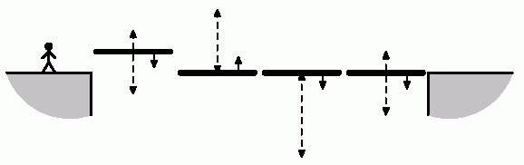

|
|||||||||||||||||
|
Server time: 2006-01-10 05:48:27 |
SPOJ Problem Set280. LiftsProblem code: LIFTS
Serj likes old games very much. Recently he has found one arcade game in his computer. When controlling the hero it is necessary to move on a map and collect various items. At a certain stage of the game Serj has faced an unexpected problem. To continue his adventures the hero should get past over a chasm. For this purpose it is possible to use consistently located lifts which look like horizontal platforms. Each lift moves up-down vertically between some levels. The hero can pass between the next adjacent platform, however it can be done only at the moment when they are at the same level. Similarly, passing from the edge of a chasm onto the lift and vice versa is only possible at the moment when the lift appears on the level of the edge. Each lift has a width equal to 4 meters. At the beginning the hero is in at a distance of two meters from the edge of a chasm. He should finish travel two meters after the opposite edge of the chasm. The hero moves at a speed of 2 meters a second. Thus, if the hero is in the initial position or in the center of the lift and wishes to pass to the next lift (or to descend from last lift onto the opposite edge of a chasm), he should begin movement exactly one second before they meet at one level. In two seconds the hero appears in the center of the next lift (or in the final position on the other side). The edges of the chasm are at the same level. For each lift the range of heights between which it moves, its initial position and the direction of movement at the initial moment are given. All lifts move with a speed of one meter a second. Find out whether the hero can get over to the opposite edge of the chasm, and if so what the minimal time required for this purpose is. Inputt – the number of test cases, then t test cases follows. OutputFor each test case output the minmal time in seconds, required to get to the opposite edge of the chasm. If it is impossible output -1. ExampleInput: 1 4 -1 2 1 -1 0 3 0 1 -4 0 0 -1 -2 1 0 -1 Output: 29
|
||||||||||||||||
| |||||||||||||||||